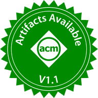
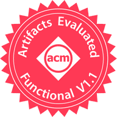
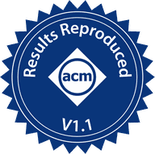

SMP
Synthesized controllers against gem5's hand-written ones.
- Protocols
- MESIMOESI
- Policy
- WB-INCL
Decoupling Protocol, Topology, and Policy for Automated Synthesis of Coherence Controllers

 Synapse
Synapse


Every new architecture needs new coherence controllers: a second socket, an accelerator, a CXL memory pool. Today each one is written by hand, as a state machine full of transient states, then debugged and verified on its own. The protocol, the position in the hierarchy and the cache policy are tangled in the same code, so changing one means starting over.
Synapse keeps the three apart. You write them once, and recombine them for every new design.
Every coherence controller, whatever its protocol and wherever it sits, reduces to three state machines. The protocol spec provides the client and the manager, the policy spec provides the policy, and the topology spec only says where each controller sits: who is its parent, who are its children.
Asks its parent for data and permissions, like a cache.
Tracks what its children hold, like a directory.
Decides when to allocate, update or replace a block.
The three machines speak different languages, and at a bridge the child may speak MESI while the parent speaks CXL. Synapse labels every state and request, in any protocol, with one tuple, ⟨Permission, Data, Coherence⟩, then fuses the transitions whose labels match. The result is one concrete controller, transient states included.
Written in the Synapse DSL.
Builds every controller in the topology, then checks deadlock freedom with Murφ and memory consistency with litmus tests.
Emits SLICC controllers and the gem5 simulation setup.
Run and measure the design like any hand-written protocol.
Generate controllers for your own hierarchy with the Synapse generator, or reproduce every experiment in the paper with the artifact.
git clone https://github.com/NicCarp11/Synapse
cd Synapse
pip install -r requirements.txt
python synapse.py generate specs/topologies/smp.yaml --out out/smpPython 3.10 or newer. generate writes the SLICC controllers and the gem5 setup of the system; verify model-checks them with CMurphi.
Start with the prebuilt Docker image; the functional test finishes in under a minute.
git clone https://github.com/TUM-DSE/Synapse
cd Synapse
docker pull carpeniem/synapse-artifact-s1_2_3:prebuilt
just shell-s1_2_3-prebuilt
# inside the container
./S1_2_3_experiments/scripts/run-functional.shAny x86-64 machine with Docker. Plan for about 12 GB of RAM per concurrent simulation. just is optional: every shortcut maps to a script in the repository.



Synthesized controllers against gem5's hand-written ones.
Which protocol to use across four sockets.
Which protocol the bridge between hosts should speak, on YCSB-C.
Write-back against write-through accelerator chiplets.
Synapse is meant to grow with the people who use it. Every protocol, topology, policy or back end added once composes with everything already there.
Generate controllers for your own hierarchy, or reproduce the paper with the artifact.
Add a protocol, a topology, a policy or a new back end. Hardware controllers through Chipyard are work in progress.
Report a bug, ask for a protocol you need, or tell us what you built with Synapse.
Nicolò Carpentieri, Anatole Lefort, David Schall, Julian Pritzi, Pramod Bhatotia. Decoupling Protocol, Topology, and Policy for Automated Synthesis of Coherence Controllers. MICRO 2026, Athens, Greece.
@inproceedings{carpentieri2026synapse,
title = {Decoupling Protocol, Topology, and Policy for
Automated Synthesis of Coherence Controllers},
author = {Carpentieri, Nicolo and Lefort, Anatole and Schall, David
and Pritzi, Julian and Bhatotia, Pramod},
booktitle = {Proceedings of the 59th IEEE/ACM International
Symposium on Microarchitecture (MICRO)},
year = {2026},
address = {Athens, Greece}
}Systems Research Group, Technical University of Munich